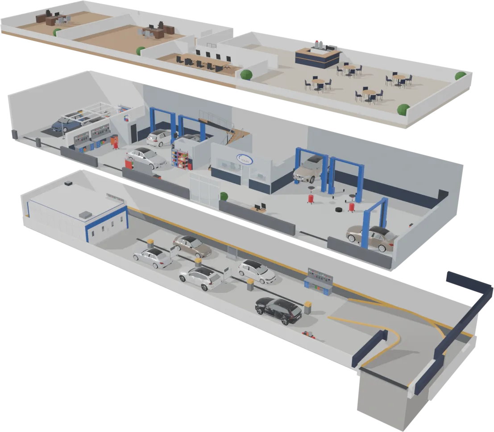
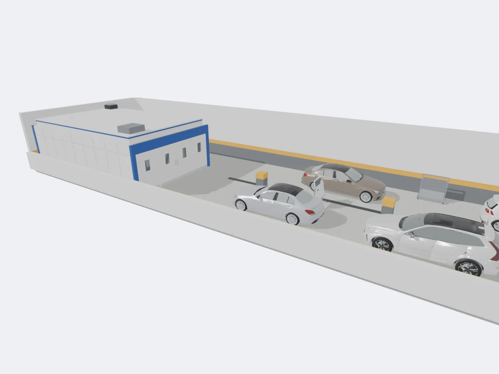
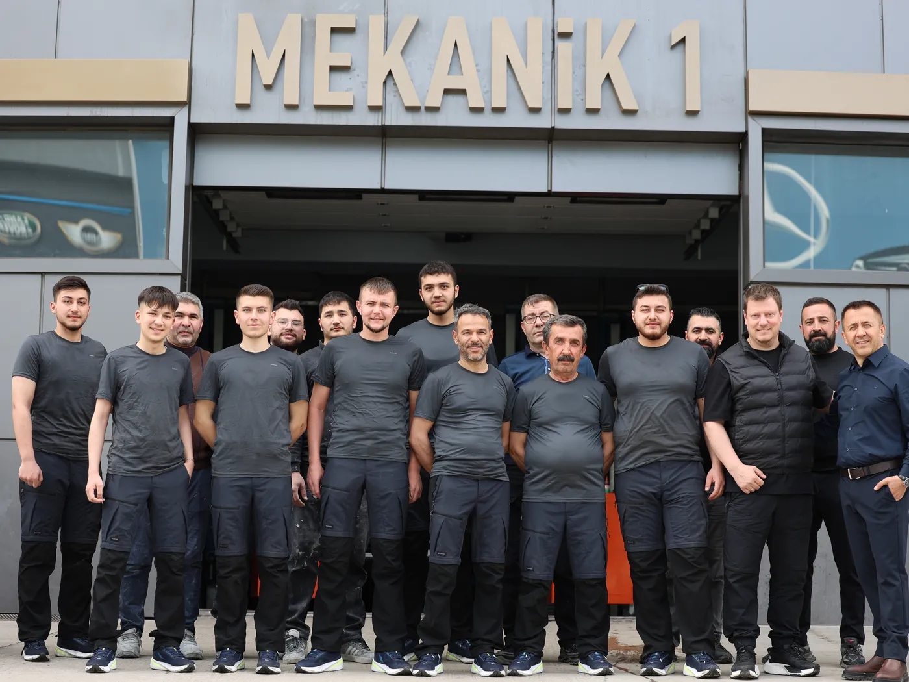
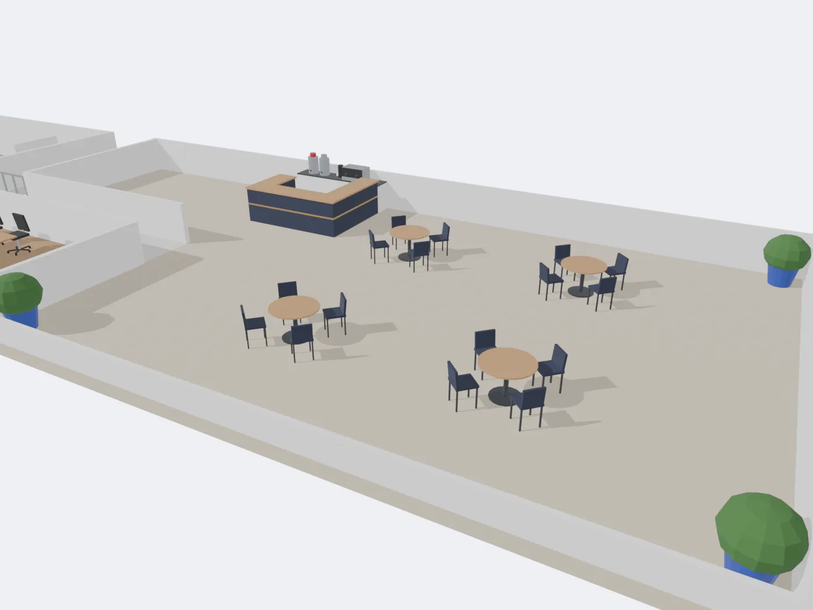

Mekanik
Fren, süspansiyon ve motor onarımı gibi mekanik işler, ana kattaki iki atölyemizde yapılır: Mekanik 1 ve Mekanik 2. Volvo, Mercedes-Benz ve Volkswagen araçlar için.
Randevu al
Şaşmaz Oto Sanayi Sitesi'ndeki binamız. Aşağı kaydırın; cephe açılsın, içini birlikte gezelim.
Bahçekapı Mah. 2547. Sokak No:3
Etimesgut / Ankara

Sürükleyerek döndürün, bir bölüme tıklayın.Yana kaydırarak döndürün, bir numaraya dokunun.
Fren, süspansiyon ve motor onarımı gibi mekanik işler, ana kattaki iki atölyemizde yapılır: Mekanik 1 ve Mekanik 2. Volvo, Mercedes-Benz ve Volkswagen araçlar için.
Randevu al
Markaya, modele, yaşa ve kilometreye göre size uygun bakım tipini belirliyoruz. Yıllık ve kilometre bakımlarında orijinal ya da 1. sınıf muadil parça; Castrol, Mobil, Shell ve PO motor yağları kullanıyoruz. Bakımdan sonra genel kontrolleri yapıp gördüklerimizi size aktarıyoruz.
Bakım randevusu al
Aracınızın elektrik ve elektronik sistemlerindeki arızaları mekanik atölyelerimizde, ölçüm ve testle kaynağına kadar izleyerek onarıyoruz. [Kapsam: müşteri onaylayacak; ör. aydınlatma, akü ve şarj sistemi, kablo tesisatı, sensörler]
Randevu al
Aracınızı getirdiğinizde önce arızayı tespit ediyoruz. Tespit ücretsizdir. Ne bulduğumuzu ve onarımın neler gerektirdiğini size anlatırız; onarıma sizin onayınızla geçeriz.
Tespit için yazın
Pasta, cila ve aracınızın dış bakımı. Kaporta ve boya onarımından sonra ya da aracınızı satmadan önce boyasını burada yeniliyoruz. Kendi kapısı binanın sol ucundadır.
Randevu al
Binanın alt katı kaporta ve boyaya ayrıldı. Araçlar sağdaki kapalı girişten rampayla iner; hasar onarımı burada yapılır, boya fırında atılır. Sigorta ve kasko onarım işlemlerinizi de buradan takip ederiz.
Randevu al
Sizi karşılayan ekip burada. 1954'ten bu yana süren bir işin bugünkü ustaları ve servis danışmanları aracınızı teslim alır ve işi baştan sona takip eder.
Randevu al
Aracınız atölyedeyken üst kattaki bekleme salonunda oturabilirsiniz. Çay ve kahve tezgâhı, masalar ve oturma alanı sizi bekler; merdiven ana girişin solundadır.
Yol tarifi